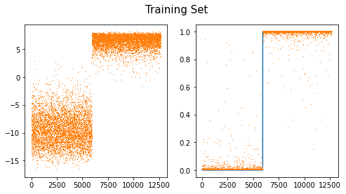
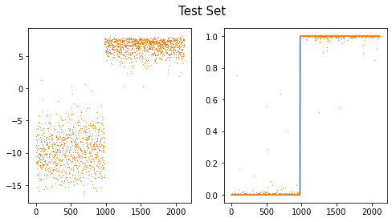
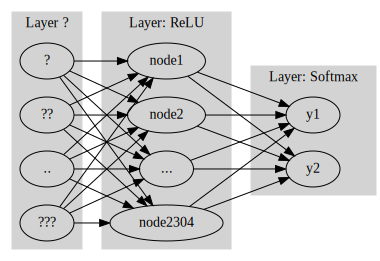
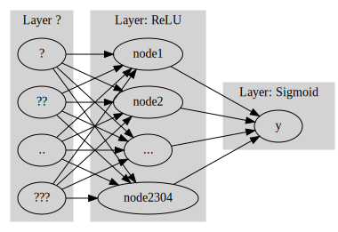

Minor topics in CNN – 다중클래스 분류, fastai metric 사용
강의영상
https://youtube.com/playlist?list=PLQqh36zP38-wVdrvMFFtAcAM2QC7ZpnN3
imports
CNN 다중클래스 분류
결론 (그냥 외우세요)
- 2개의 class를 구분하는 문제가 아니라 \(k\)개의 class를 구분해야 한다면?
일반적인 개념
- 손실함수: BCE loss \(\to\) Cross Entropy loss
- 마지막층의 선형변환: torch.nn.Linear(?,1) \(\to\) torch.nn.Linear(?,k)
- 마지막층의 활성화: sig \(\to\) softmax
파이토치 한정
- y의형태: (n,) vector + int형 // (n,k) one-hot encoded vector + float형
- 손실함수: torch.nn.BCEWithLogitsLoss, \(\to\) torch.nn.CrossEntropyLoss
- 마지막층의 선형변환: torch.nn.Linear(?,1) \(\to\) torch.nn.Linear(?,k)
- 마지막층의 활성화: None \(\to\) None (손실함수에 이미 마지막층의 활성화가 포함)
실습: 3개의 클래스를 구분
training set
X0 = torch.stack([torchvision.io.read_image(str(fname)) for fname in (path/'training/0').ls()])
X1 = torch.stack([torchvision.io.read_image(str(fname)) for fname in (path/'training/1').ls()])
X2 = torch.stack([torchvision.io.read_image(str(fname)) for fname in (path/'training/2').ls()])
X = torch.concat([X0,X1,X2])/255
y = torch.tensor([0]*len(X0) + [1]*len(X1)+ [2]*len(X2))#.reshape(-1,1)test set
X0 = torch.stack([torchvision.io.read_image(str(fname)) for fname in (path/'testing/0').ls()])
X1 = torch.stack([torchvision.io.read_image(str(fname)) for fname in (path/'testing/1').ls()])
X2 = torch.stack([torchvision.io.read_image(str(fname)) for fname in (path/'testing/2').ls()])
XX = torch.concat([X0,X1,X2])/255
yy = torch.tensor([0]*len(X0) + [1]*len(X1)+ [2]*len(X2))#.reshape(-1,1)(1) dls
(2) lrnr
(3) 학습
| epoch | train_loss | valid_loss | time |
|---|---|---|---|
| 0 | 0.155762 | 0.045966 | 00:00 |
| 1 | 0.087853 | 0.093116 | 00:00 |
| 2 | 0.089215 | 0.033146 | 00:00 |
| 3 | 0.075707 | 0.039687 | 00:00 |
| 4 | 0.063615 | 0.031188 | 00:00 |
| 5 | 0.055850 | 0.029167 | 00:00 |
| 6 | 0.050883 | 0.028610 | 00:00 |
| 7 | 0.047144 | 0.028127 | 00:00 |
| 8 | 0.044129 | 0.027425 | 00:00 |
| 9 | 0.041849 | 0.026887 | 00:00 |
(4) 예측
Sequential(
(0): Sequential(
(0): Conv2d(1, 16, kernel_size=(5, 5), stride=(1, 1))
(1): ReLU()
(2): MaxPool2d(kernel_size=(2, 2), stride=(2, 2), padding=0, dilation=1, ceil_mode=False)
(3): Flatten(start_dim=1, end_dim=-1)
)
(1): Linear(in_features=2304, out_features=3, bias=True)
)| 0 | 1 | 2 | y | |
|---|---|---|---|---|
| 0 | 2.025615 | -17.453382 | -2.335629 | 0 |
| 1 | 2.531184 | -9.890347 | -3.949971 | 0 |
| 2 | 1.587324 | -13.035635 | -3.257438 | 0 |
| 3 | 2.749664 | -9.918694 | -6.867003 | 0 |
| 4 | 2.155442 | -15.885134 | -3.019295 | 0 |
| ... | ... | ... | ... | ... |
| 3142 | -9.030737 | -8.673495 | 1.204605 | 2 |
| 3143 | -3.569304 | -10.748278 | -0.645055 | 2 |
| 3144 | -3.627095 | -12.919289 | 1.046083 | 2 |
| 3145 | -5.151307 | -9.524368 | 0.068864 | 2 |
| 3146 | -8.014889 | -14.518770 | 2.732226 | 2 |
3147 rows × 4 columns
| 0 | 1 | 2 | y | |
|---|---|---|---|---|
| 0 | 2.025615 | -17.453382 | -2.335629 | 0 |
| 1 | 2.531184 | -9.890347 | -3.949971 | 0 |
| 2 | 1.587324 | -13.035635 | -3.257438 | 0 |
| 3 | 2.749664 | -9.918694 | -6.867003 | 0 |
| 4 | 2.155442 | -15.885134 | -3.019295 | 0 |
| ... | ... | ... | ... | ... |
| 975 | 4.450414 | -19.329332 | -5.451057 | 0 |
| 976 | 2.597144 | -21.202513 | -2.372313 | 0 |
| 977 | 3.089397 | -15.486772 | -3.171502 | 0 |
| 978 | 2.591355 | -17.475590 | -3.039083 | 0 |
| 979 | 4.575789 | -21.636261 | -5.077421 | 0 |
980 rows × 4 columns
- 대체적으로 첫번째 칼럼의 숫자들이 다른칼럼보다 크다.
| 0 | 1 | 2 | y | |
|---|---|---|---|---|
| 980 | -7.629252 | 2.701625 | -3.049654 | 1 |
| 981 | -6.666027 | 2.027717 | -4.440878 | 1 |
| 982 | -7.120140 | 3.354897 | -3.937105 | 1 |
| 983 | -7.139010 | 2.058928 | -2.954304 | 1 |
| 984 | -6.999043 | 3.258377 | -3.432081 | 1 |
| ... | ... | ... | ... | ... |
| 2110 | -7.406105 | 4.032059 | -3.826451 | 1 |
| 2111 | -6.172441 | 3.187883 | -3.490717 | 1 |
| 2112 | -7.035848 | 3.202726 | -3.547020 | 1 |
| 2113 | -7.149322 | 1.741414 | -1.765136 | 1 |
| 2114 | -5.775263 | 3.041395 | -2.980052 | 1 |
1135 rows × 4 columns
- 대체적으로 두번째 칼럼의 숫자들이 다른칼럼보다 크다.
| 0 | 1 | 2 | y | |
|---|---|---|---|---|
| 2115 | -7.452892 | -7.137640 | 0.605079 | 2 |
| 2116 | -5.262731 | -7.798437 | -1.708323 | 2 |
| 2117 | -9.056837 | -9.649239 | 1.557607 | 2 |
| 2118 | -6.614496 | -10.291727 | 1.293422 | 2 |
| 2119 | -3.120885 | -10.670292 | -0.660188 | 2 |
| ... | ... | ... | ... | ... |
| 3142 | -9.030737 | -8.673495 | 1.204605 | 2 |
| 3143 | -3.569304 | -10.748278 | -0.645055 | 2 |
| 3144 | -3.627095 | -12.919289 | 1.046083 | 2 |
| 3145 | -5.151307 | -9.524368 | 0.068864 | 2 |
| 3146 | -8.014889 | -14.518770 | 2.732226 | 2 |
1032 rows × 4 columns
- 대체적으로 세번째 칼럼의 숫자들이 다른칼럼보다 크다.
- 예측하는방법? - 칼럼0의 숫자가 크다 -> y=0일 확률이 큼 - 칼럼1의 숫자가 크다 -> y=1일 확률이 큼 - 칼럼2의 숫자가 크다 -> y=2일 확률이 큼
공부: Softmax
- 눈치: softmax를 쓰기 직전의 숫자들은 (n,k)꼴로 되어있음. 각 observation 마다 k개의 숫자가 있는데, 그중에서 유난히 큰 하나의 숫자가 있음.
- torch.nn.Softmax() 손계산
(예시1) – 잘못계산
_netout = torch.tensor([[-2.0,-2.0,0.0],
[3.14,3.14,3.14],
[0.0,0.0,2.0],
[2.0,2.0,4.0],
[0.0,0.0,0.0]])
_netouttensor([[-2.0000, -2.0000, 0.0000],
[ 3.1400, 3.1400, 3.1400],
[ 0.0000, 0.0000, 2.0000],
[ 2.0000, 2.0000, 4.0000],
[ 0.0000, 0.0000, 0.0000]])tensor([[0.0041, 0.0041, 0.0115],
[0.7081, 0.7081, 0.2653],
[0.0306, 0.0306, 0.0848],
[0.2265, 0.2265, 0.6269],
[0.0306, 0.0306, 0.0115]])(예시2) – 이게 맞게 계산되는 것임
tensor([[-2.0000, -2.0000, 0.0000],
[ 3.1400, 3.1400, 3.1400],
[ 0.0000, 0.0000, 2.0000],
[ 2.0000, 2.0000, 4.0000],
[ 0.0000, 0.0000, 0.0000]])tensor([[0.1065, 0.1065, 0.7870],
[0.3333, 0.3333, 0.3333],
[0.1065, 0.1065, 0.7870],
[0.1065, 0.1065, 0.7870],
[0.3333, 0.3333, 0.3333]])(예시3) – 차원을 명시안하면 맞게 계산해주고 경고 줌
tensor([[-2.0000, -2.0000, 0.0000],
[ 3.1400, 3.1400, 3.1400],
[ 0.0000, 0.0000, 2.0000],
[ 2.0000, 2.0000, 4.0000],
[ 0.0000, 0.0000, 0.0000]])/home/cgb4/anaconda3/envs/py37/lib/python3.7/site-packages/ipykernel_launcher.py:1: UserWarning: Implicit dimension choice for softmax has been deprecated. Change the call to include dim=X as an argument.
"""Entry point for launching an IPython kernel.tensor([[0.1065, 0.1065, 0.7870],
[0.3333, 0.3333, 0.3333],
[0.1065, 0.1065, 0.7870],
[0.1065, 0.1065, 0.7870],
[0.3333, 0.3333, 0.3333]])(예시4) – 진짜 손계산
tensor([[-2.0000, -2.0000, 0.0000],
[ 3.1400, 3.1400, 3.1400],
[ 0.0000, 0.0000, 2.0000],
[ 2.0000, 2.0000, 4.0000],
[ 0.0000, 0.0000, 0.0000]])tensor([[ 0.1353, 0.1353, 1.0000],
[23.1039, 23.1039, 23.1039],
[ 1.0000, 1.0000, 7.3891],
[ 7.3891, 7.3891, 54.5981],
[ 1.0000, 1.0000, 1.0000]])공부: CrossEntropyLoss
# torch.nn.CrossEntropyLoss() 손계산: one-hot version
tensor([[-2.0000, -2.0000, 0.0000],
[ 3.1400, 3.1400, 3.1400],
[ 0.0000, 0.0000, 2.0000],
[ 2.0000, 2.0000, 4.0000],
[ 0.0000, 0.0000, 0.0000]])tensor([[0., 0., 1.],
[0., 1., 0.],
[0., 0., 1.],
[0., 0., 1.],
[1., 0., 0.]])(tensor([[0.1065, 0.1065, 0.7870],
[0.3333, 0.3333, 0.3333],
[0.1065, 0.1065, 0.7870],
[0.1065, 0.1065, 0.7870],
[0.3333, 0.3333, 0.3333]]),
tensor([[0., 0., 1.],
[0., 1., 0.],
[0., 0., 1.],
[0., 0., 1.],
[1., 0., 0.]]))- 계산결과
- 계산하는 방법도 중요한데 torch.nn.CrossEntropyLoss() 에는 softmax 활성화함수가 이미 포함되어 있다는 것을 확인하는 것이 더 중요함.
- 따라서 torch.nn.CrossEntropyLoss() 는 사실 torch.nn.CEWithSoftmaxLoss() 정도로 바꾸는 것이 더 말이 되는 것 같다.
# torch.nn.CrossEntropyLoss() 손계산: lenght \(n\) vertor version
tensor([[-2.0000, -2.0000, 0.0000],
[ 3.1400, 3.1400, 3.1400],
[ 0.0000, 0.0000, 2.0000],
[ 2.0000, 2.0000, 4.0000],
[ 0.0000, 0.0000, 0.0000]])실습: \(k=2\)로 두면 이진분류도 가능
- download data
training
test
(1) dls
(2) lrnr
(3) 학습
| epoch | train_loss | valid_loss | time |
|---|---|---|---|
| 0 | 0.018623 | 0.012110 | 00:00 |
| 1 | 0.017453 | 0.010544 | 00:00 |
| 2 | 0.016391 | 0.009324 | 00:00 |
| 3 | 0.015412 | 0.008343 | 00:00 |
| 4 | 0.014506 | 0.007542 | 00:00 |
| 5 | 0.013664 | 0.006874 | 00:00 |
| 6 | 0.012881 | 0.006318 | 00:00 |
| 7 | 0.012152 | 0.005849 | 00:00 |
| 8 | 0.011473 | 0.005448 | 00:00 |
| 9 | 0.010841 | 0.005103 | 00:00 |
(4) 예측 및 시각화
Sequential(
(0): Conv2d(1, 16, kernel_size=(5, 5), stride=(1, 1))
(1): ReLU()
(2): MaxPool2d(kernel_size=(2, 2), stride=(2, 2), padding=0, dilation=1, ceil_mode=False)
(3): Flatten(start_dim=1, end_dim=-1)
(4): Linear(in_features=2304, out_features=2, bias=True)
)sftmax = torch.nn.Softmax(dim=1)
sig = torch.nn.Sigmoid()
fig,ax = plt.subplots(1,2,figsize=(8,4))
ax[0].plot(net(X).diff(axis=1).data,',',color="C1")
ax[1].plot(y)
ax[1].plot(sftmax(net(X))[:,1].data,',')
#ax[1].plot(sig(net(X).diff(axis=1)).data,',')
fig.suptitle("Training Set",size=15)Text(0.5, 0.98, 'Training Set')
fig,ax = plt.subplots(1,2,figsize=(8,4))
ax[0].plot(net(XX).diff(axis=1).data,',',color="C1")
ax[1].plot(yy)
ax[1].plot(sftmax(net(XX))[:,1].data,',')
#ax[1].plot(sig(net(XX).diff(axis=1)).data,',')
fig.suptitle("Test Set",size=15)Text(0.5, 0.98, 'Test Set')
- note: softmax(u1,u2)=[sig(u1-u2), sig(u2-u1)]=[1-sig(u2-u1),sig(u2-u1)]
공부: 이진분류에서 소프트맥스 vs 시그모이드
- 이진분류문제 = “y=0 or y=1” 을 맞추는 문제 = 성공과 실패를 맞추는 문제 = 성공확률과 실패확률을 추정하는 문제
- softmax, sigmoid
- softmax: (실패확률, 성공확률) 꼴로 결과가 나옴 // softmax는 실패확률과 성공확률을 둘다 추정한다.
- sigmoid: (성공확률) 꼴로 결과가 나옴 // sigmoid는 성공확률만 추정한다.
- 그런데 “실패확률=1-성공확률” 이므로 사실상 둘은 같은걸 추정하는 셈이다. (성공확률만 추정하면 실패확률은 저절로 추정되니까)
- 아래는 사실상 같은 모형이다.
Code
gv('''
splines=line
subgraph cluster_1{
style=filled;
color=lightgrey;
"?"
"??"
".."
"???"
label = "Layer ?"
}
subgraph cluster_2{
style=filled;
color=lightgrey;
"?" -> "node1"
"??" -> "node1"
".." -> "node1"
"???" -> "node1"
"?" -> "node2"
"??" -> "node2"
".." -> "node2"
"???" -> "node2"
"?" -> "..."
"??" -> "..."
".." -> "..."
"???" -> "..."
"?" -> "node2304"
"??" -> "node2304"
".." -> "node2304"
"???" -> "node2304"
label = "Layer: ReLU"
}
subgraph cluster_3{
style=filled;
color=lightgrey;
"node1" -> "y1"
"node2" -> "y1"
"..." -> "y1"
"node2304" -> "y1"
"node1" -> "y2"
"node2" -> "y2"
"..." -> "y2"
"node2304" -> "y2"
label = "Layer: Softmax"
}
''')
Code
gv('''
splines=line
subgraph cluster_1{
style=filled;
color=lightgrey;
"?"
"??"
".."
"???"
label = "Layer ?"
}
subgraph cluster_2{
style=filled;
color=lightgrey;
"?" -> "node1"
"??" -> "node1"
".." -> "node1"
"???" -> "node1"
"?" -> "node2"
"??" -> "node2"
".." -> "node2"
"???" -> "node2"
"?" -> "..."
"??" -> "..."
".." -> "..."
"???" -> "..."
"?" -> "node2304"
"??" -> "node2304"
".." -> "node2304"
"???" -> "node2304"
label = "Layer: ReLU"
}
subgraph cluster_3{
style=filled;
color=lightgrey;
"node1" -> "y"
"node2" -> "y"
"..." -> "y"
"node2304" -> "y"
label = "Layer: Sigmoid"
}
''')
- 둘은 사실상 같은 효과를 주는 모형인데 학습할 파라메터는 sigmoid의 경우가 더 적다. \(\to\) sigmoid를 사용하는 모형이 비용은 싸고 효과는 동일하다는 말 \(\to\) 이진분류 한정해서는 softmax를 쓰지말고 sigmoid를 써야함.
- softmax가 갑자기 너무 안좋아보이는데 sigmoid는 k개의 클래스로 확장이 불가능한 반면 softmax는 확장이 용이하다는 장점이 있음
소프트맥스 vs 시그모이드 정리
- 결론
- 소프트맥스는 시그모이드의 확장이다.
- 클래스의 수가 2개일 경우에는 (Sigmoid, BCEloss) 조합을 사용해야 하고 클래스의 수가 2개보다 클 경우에는 (Softmax, CrossEntropyLoss) 를 사용해야 한다.
- 그런데 사실.. 클래스의 수가 2개일 경우일때 (Softmax, CrossEntropyLoss)를 사용해도 그렇게 큰일나는것은 아니다. (흑백이미지를 칼라잉크로 출력하는 느낌)
참고
| \(y\) | 분포가정 | 마지막층의 활성화함수 | 손실함수 |
|---|---|---|---|
| 3.45, 4.43, … (연속형) | 정규분포 | None (or Identity) | MSE |
| 0 or 1 | 이항분포 with \(n=1\) (=베르누이) | Sigmoid | BCE |
| [0,0,1], [0,1,0], [1,0,0] | 다항분포 with \(n=1\) | Softmax | Cross Entropy |
fastai metric 사용
데이터준비
- download data
- training set
- test set
사용자정의 메트릭이용
(1) dls 만들기
(2) lrnr 생성
(3) 학습
| epoch | train_loss | valid_loss | acc | err | time |
|---|---|---|---|---|---|
| 0 | 0.930635 | 0.633062 | 0.463357 | 0.536643 | 00:00 |
| 1 | 0.700525 | 0.435254 | 0.989125 | 0.010875 | 00:00 |
| 2 | 0.562099 | 0.293302 | 0.992435 | 0.007565 | 00:00 |
| 3 | 0.453646 | 0.169834 | 0.992908 | 0.007092 | 00:00 |
| 4 | 0.360984 | 0.098153 | 0.994326 | 0.005674 | 00:00 |
| 5 | 0.286862 | 0.062732 | 0.993853 | 0.006147 | 00:00 |
| 6 | 0.229778 | 0.044261 | 0.994799 | 0.005201 | 00:00 |
| 7 | 0.185838 | 0.032975 | 0.995745 | 0.004255 | 00:00 |
| 8 | 0.151484 | 0.025062 | 0.996217 | 0.003783 | 00:00 |
| 9 | 0.124157 | 0.019350 | 0.996690 | 0.003310 | 00:00 |
(4) 예측
- 생략
fastai지원 메트릭이용– 잘못된사용
(1) dls 만들기
(2) lrnr 생성
Signature: accuracy(inp, targ, axis=-1) Source: def accuracy(inp, targ, axis=-1): "Compute accuracy with `targ` when `pred` is bs * n_classes" pred,targ = flatten_check(inp.argmax(dim=axis), targ) return (pred == targ).float().mean() File: ~/anaconda3/envs/py37/lib/python3.7/site-packages/fastai/metrics.py Type: function
Signature: error_rate(inp, targ, axis=-1) Source: def error_rate(inp, targ, axis=-1): "1 - `accuracy`" return 1 - accuracy(inp, targ, axis=axis) File: ~/anaconda3/envs/py37/lib/python3.7/site-packages/fastai/metrics.py Type: function
(3) 학습
| epoch | train_loss | valid_loss | accuracy | error_rate | time |
|---|---|---|---|---|---|
| 0 | 0.958819 | 0.638672 | 0.463357 | 0.536643 | 00:00 |
| 1 | 0.698769 | 0.425380 | 0.463357 | 0.536643 | 00:00 |
| 2 | 0.556408 | 0.278437 | 0.463357 | 0.536643 | 00:00 |
| 3 | 0.447104 | 0.153257 | 0.463357 | 0.536643 | 00:00 |
| 4 | 0.352915 | 0.088516 | 0.463357 | 0.536643 | 00:00 |
| 5 | 0.278620 | 0.056958 | 0.463357 | 0.536643 | 00:00 |
| 6 | 0.221951 | 0.040489 | 0.463357 | 0.536643 | 00:00 |
| 7 | 0.178791 | 0.030974 | 0.463357 | 0.536643 | 00:00 |
| 8 | 0.145480 | 0.024886 | 0.463357 | 0.536643 | 00:00 |
| 9 | 0.119392 | 0.020659 | 0.463357 | 0.536643 | 00:00 |
- 이상하다..?
(4) 예측
Sequential(
(0): Conv2d(1, 16, kernel_size=(5, 5), stride=(1, 1))
(1): ReLU()
(2): MaxPool2d(kernel_size=(2, 2), stride=(2, 2), padding=0, dilation=1, ceil_mode=False)
(3): Flatten(start_dim=1, end_dim=-1)
(4): Linear(in_features=2304, out_features=1, bias=True)
(5): Sigmoid()
)- 맞추는건 잘 맞추는데?
fastai지원 메트릭이용– 올바른 사용(1)
- 가정
- X의 형태는 (n,채널,픽셀,픽셀)로 가정한다.
- y의 형태는 (n,) 벡터이다. 즉 \(n\times 1\) 이 아니라 그냥 길이가 \(n\)인 벡터로 가정한다.
- y의 각 원소는 0,1,2,3,… 와 같이 카테고리를 의미하는 숫자이어야 하며 이 숫자는 int형으로 저장되어야 한다.
- loss function은 CrossEntropyLoss()를 쓴다고 가정한다. (따라서 네트워크의 최종레이어는 torch.nn.Linear(?,클래스의수) 꼴이 되어야 한다.)
(1) dls 만들기
(tensor([0, 0, 0, ..., 1, 1, 1]), tensor([0, 0, 0, ..., 1, 1, 1]))(2) lrnr 생성
(3) 학습
| epoch | train_loss | valid_loss | accuracy | error_rate | time |
|---|---|---|---|---|---|
| 0 | 1.083689 | 0.592268 | 0.463357 | 0.536643 | 00:00 |
| 1 | 0.674220 | 0.340684 | 0.963593 | 0.036407 | 00:00 |
| 2 | 0.510727 | 0.152380 | 0.991489 | 0.008511 | 00:00 |
| 3 | 0.380071 | 0.069530 | 0.997163 | 0.002837 | 00:00 |
| 4 | 0.284898 | 0.038776 | 0.997163 | 0.002837 | 00:00 |
| 5 | 0.217856 | 0.025257 | 0.997163 | 0.002837 | 00:00 |
| 6 | 0.169902 | 0.018588 | 0.997163 | 0.002837 | 00:00 |
| 7 | 0.134621 | 0.014637 | 0.998582 | 0.001418 | 00:00 |
| 8 | 0.107967 | 0.012024 | 0.998582 | 0.001418 | 00:00 |
| 9 | 0.087427 | 0.010147 | 0.998582 | 0.001418 | 00:00 |
fastai지원 메트릭이용– 올바른 사용(2)
- 가정
- X의 형태는 (n,채널,픽셀,픽셀)로 가정한다.
- y의 형태는 (n,클래스의수)로 가정한다. 즉 y가 one_hot 인코딩된 형태로 가정한다.
- y의 각 원소는 0 혹은 1이다.
- loss function은 CrossEntropyLoss()를 쓴다고 가정한다. (따라서 네트워크의 최종레이어는 torch.nn.Linear(?,클래스의수) 꼴이 되어야 한다.)
(1) dls 만들기
y_onehot = torch.tensor(list(map(lambda x: [1.0,0.0] if x==0 else [0.0,1.0], y)))
yy_onehot = torch.tensor(list(map(lambda x: [1.0,0.0] if x==0 else [0.0,1.0], yy)))
# y_onehot = torch.nn.functional.one_hot(y.reshape(-1).to(torch.int64)).to(torch.float32)
# yy_onehot = torch.nn.functional.one_hot(yy.reshape(-1).to(torch.int64)).to(torch.float32)(2) lrnr 생성
(3) 학습
| epoch | train_loss | valid_loss | accuracy_multi | time |
|---|---|---|---|---|
| 0 | 1.073728 | 0.608127 | 0.463357 | 00:00 |
| 1 | 0.683059 | 0.328684 | 0.982979 | 00:00 |
| 2 | 0.508058 | 0.156030 | 0.990780 | 00:00 |
| 3 | 0.378242 | 0.071232 | 0.995272 | 00:00 |
| 4 | 0.284064 | 0.041114 | 0.995981 | 00:00 |
| 5 | 0.217714 | 0.027780 | 0.996217 | 00:00 |
| 6 | 0.170183 | 0.021023 | 0.995981 | 00:00 |
| 7 | 0.135240 | 0.016962 | 0.996927 | 00:00 |
| 8 | 0.108881 | 0.014204 | 0.997400 | 00:00 |
| 9 | 0.088585 | 0.012181 | 0.997872 | 00:00 |